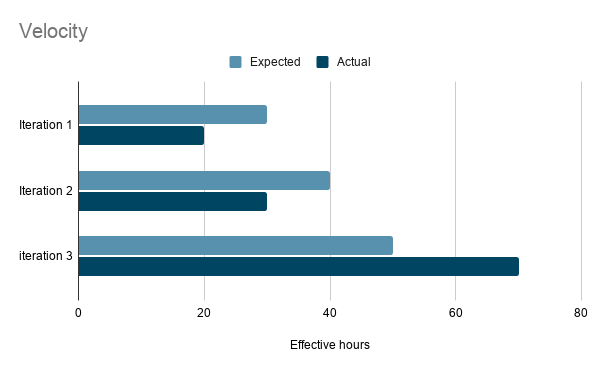

| A new and exciting way to visit your favourite bookstore from anywhere. The Bookstore app is a virtual trip to the bookstore. You can browse, check prices, reserve books, and a lot more. Download it on the Android Play store today! | |
|  |
Iteration 1:
We overestimated our velocity as we were ambitious on envisioning how the project would go. We implemented logic for most planned features and have the overall structure organized, but without including the time we need to get familiar with the coding environment, we ultimately were not able to meet our original expectation.
Iteration 2: Despite the final result, we were actually effective when implemented features. All the planned features were implemented and ran fine with the fake database. However, we encountered great difficulty when implementing and injecting the real database which resulted us losing all velocity in the last week. Because of that we lacked time to get rid of code smells e.g. do proper layering and implement exceptions, and our final product did not meet our expectation. Iteration 3: With the database working, our velocity increased greatly. We far exceeded our expectations. |
|---|---|